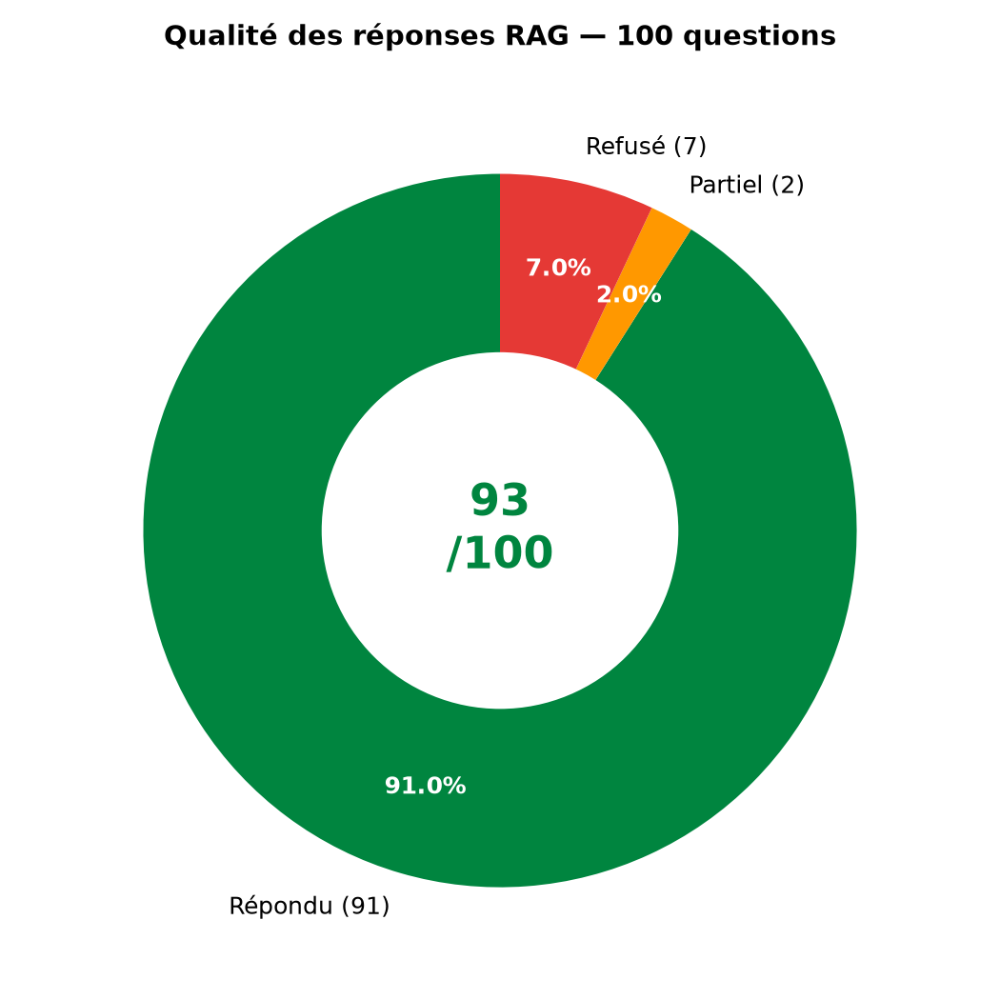
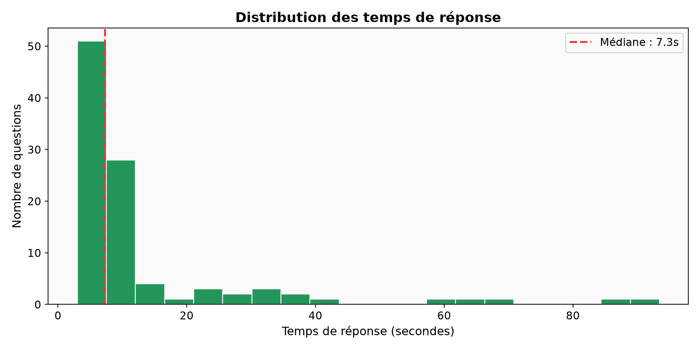
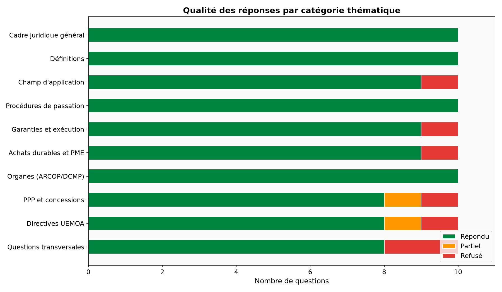
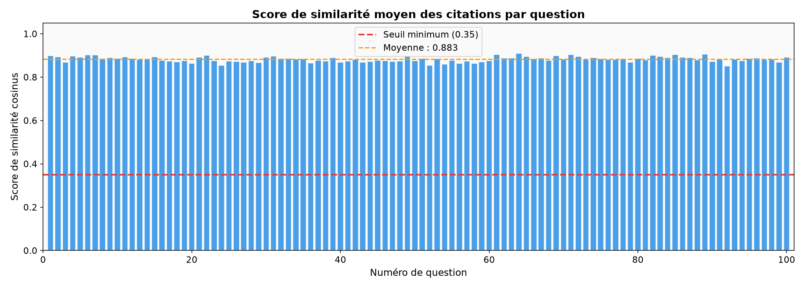
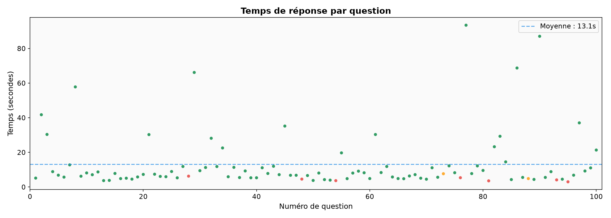
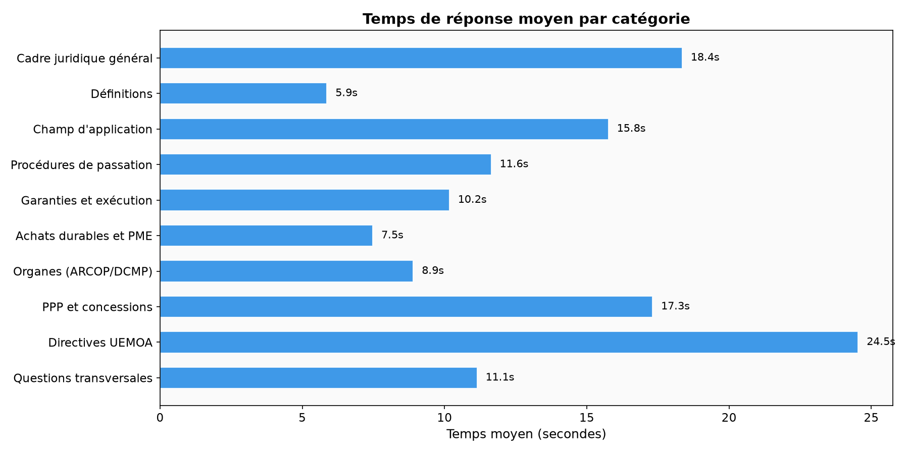
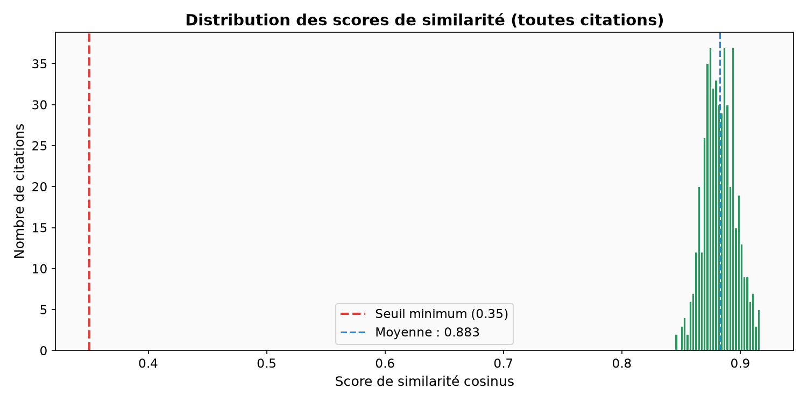
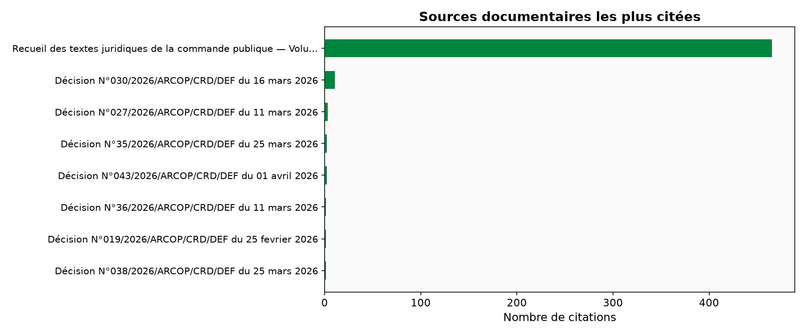

Architecture RAG complète — de l'ingestion du Code de la Famille à l'évaluation sur 100 questions
| 1 | Introduction & Problématique |
| 2 | Sources Juridiques Indexées |
| 3 | Architecture Générale |
| 4 | Modèle d'Embedding (E5) |
| 5 | Pipeline d'Ingestion (PDF → Vecteurs) |
| 6 | Pipeline de Recherche & Génération |
| 7 | Système Anti-Hallucination (5 couches) |
| 8 | Stack Technique & Déploiement |
| 9 | Évaluation RAG — 100 Questions |
| 10 | Analyse des Résultats & Graphiques |
| 11 | Conclusion & Perspectives |
Le droit de la famille sénégalais est complexe, pluraliste et difficilement accessible
Le Code de la Famille sénégalais et ses 8 Livres
| Livre | Contenu | Articles |
|---|---|---|
| Livre I | Des Personnes (nom, domicile, absence, état civil) | Art. 1 à 89 |
| Livre II | Du Lien Matrimonial (mariage, divorce, séparation de corps) | Art. 90 à 199 |
| Livre III | De la Filiation (filiation d'origine, adoption plénière et limitée) | Art. 200 à 255 |
| Livre IV | De la Parenté et de l'Alliance (obligation alimentaire) | Art. 256 à 277 |
| Livre V | Des Incapacités (mineurs, tutelle, émancipation, majeurs) | Art. 278 à 412 |
| Livre VI | Des Régimes Matrimoniaux (séparation de biens, dotal, communautaire) | Art. 413 à 465 |
| Livre VII | Des Successions ab intestat (droit commun et droit musulman) | Art. 466 à 755 |
| Livre VIII | Des Donations entre vifs et des Testaments | Art. 756 à 843 |
4 services applicatifs + 3 services d'infrastructure — Docker Compose
Embeddings asymétriques avec préfixes query/passage pour le français juridique
| Propriété | Valeur |
|---|---|
| Dimensions | 384 |
| Paramètres | ~33M |
| Langues | 100+ (français natif) |
| Métrique | Similarité cosinus |
| GPU requis | Non (CPU) |
| Batch indexation | 16 |
Le préfixage asymétrique améliore la pertinence en distinguant le rôle du texte (document vs requête) lors de l'encodage.
Transformation des documents juridiques en chunks vectorisés dans ChromaDB
5 étapes : de la question utilisateur à la réponse citée
Le LLM (Gemma 4 31B) corrige l'orthographe et la ponctuation sans modifier le sens. Garde-fou : vérification que ≥60% des tokens originaux sont préservés.
Le LLM extrait jusqu'à 10 termes juridiques (sigles, synonymes formels). Few-shot : «garde des enfants» → «puissance paternelle», «filiation», «tutelle».
Deux requêtes ChromaDB : question nettoyée + question enrichie (keywords + glossaire). Fusion par chunk_id, score max. Seuil minimum : 0.35 de similarité cosinus. top_k = 5.
Prompt strict avec 3 exemples few-shot (mariage, filiation, hors-sujet). Post-validation : chaque [Article X — doc] doit exister dans le contexte. 2 tentatives, puis fallback déterministe.
Zéro hallucination : le système refuse plutôt que d'inventer
| # | Mécanisme | Implémentation | Action |
|---|---|---|---|
| 1 | Score minimum | min_score = 0.35 (cosinus) | Refus sans appel LLM si aucun chunk pertinent |
| 2 | Prompt strict | SYSTEM_PROMPT (10 règles) | Interdiction connaissances externes, citations obligatoires |
| 3 | Few-shot examples | 3 exemples dans le prompt | In-scope + filiation + hors-sujet → refus |
| 4 | Post-validation | STRICT_CITATION_RE + validate_citations() | Chaque [Article X — doc] vérifié vs contexte |
| 5 | Fallback déterministe | _deterministic_answer() | Extrait brut du meilleur chunk (≤800 chars) |
\[Article\s+([^\]\—\-]+?)\s*[—\-]\s*[^\]]+\]
Architecture production-ready containerisée (7 containers Docker)
| Tech | Rôle |
|---|---|
| NestJS 11 | Framework API + injection de dépendances |
| Prisma 7 | ORM + migrations + type safety |
| PostgreSQL 16 | Base relationnelle principale |
| Passport JWT HS256 | Authentification + guards RBAC |
| MinIO (S3-compatible) | Stockage fichiers (docs, avatars) |
| Nodemailer | Emails transactionnels |
| Tech | Rôle |
|---|---|
| FastAPI 0.115+ | API RAG async |
| sentence-transformers 3.x | Embeddings E5 multilingue |
| ChromaDB 0.5.20 | Vector store HNSW cosine |
| Ollama Cloud | LLM Gemma 4 31B |
| pdfplumber | Parsing PDF juridiques |
| Nuxt 4 + Tailwind 4 | Frontend SSR |
| Caddy Server | Reverse proxy + TLS auto |
100 questions couvrant 10 thématiques du droit de la famille sénégalais
| Moyenne | 13.1s |
| Médiane | 7.3s |
| P5 / P95 | 3.8s / 42.5s |
| Min / Max | 3.0s / 93.4s |
| Écart-type | 16.5s |
10 catégories × 10 questions — taux de réponse et performance
| Catégorie | Répondu | Partiel | Refusé | Taux | Temps moy. | Tokens moy. |
|---|---|---|---|---|---|---|
| Personnes & État civil | 10 | 0 | 0 | 100% | 18.4s | 71 |
| Mariage & Conditions | 10 | 0 | 0 | 100% | 5.9s | 62 |
| Divorce & Séparation | 9 | 0 | 1 | 90% | 15.8s | 52 |
| Filiation & Adoption | 10 | 0 | 0 | 100% | 11.6s | 65 |
| Obligation alimentaire | 9 | 0 | 1 | 90% | 10.2s | 76 |
| Incapacités & Tutelle | 9 | 0 | 1 | 90% | 7.5s | 61 |
| Régimes matrimoniaux | 10 | 0 | 0 | 100% | 8.9s | 64 |
| Successions droit commun | 8 | 1 | 1 | 80% | 17.3s | 60 |
| Successions droit musulman | 8 | 1 | 1 | 80% | 24.5s | 52 |
| Donations & Testaments | 8 | 0 | 2 | 80% | 11.1s | 58 |
Générés automatiquement à partir des 100 tests sur l'API de production




Performance détaillée, tokens et sources documentaires




Le système anti-hallucination préfère refuser que d'inventer
| Q# | Question | Statut | Raison |
|---|---|---|---|
| 28 | Droit du travail et licenciement | Refusé | Hors corpus (Code du Travail) |
| 48 | Procédure pénale en cas de bigamie | Refusé | Détail non indexé (Code Pénal) |
| 54 | Droit foncier et propriété immobilière | Refusé | Texte non indexé |
| 73 | Calcul exact des parts successorales musulmanes | Partiel | Calcul complexe multi-articles |
| 76 | Substitutions fidéicommissaires complexes | Refusé | Concept très spécifique |
| 81 | Conflit de juridictions internationales | Refusé | Droit international privé |
| 88 | Quotité disponible en présence d'héritiers réservataires | Partiel | Réponse incomplète |
| 93 | Droit commercial OHADA | Refusé | Hors corpus |
| 95 | Sécurité sociale et prestations familiales | Refusé | Hors corpus |
Statistiques complètes des 100 tests automatisés
| Total | 6 198 tokens |
| Moyenne | 62 tokens/réponse |
| Médiane | 57 tokens |
| Min / Max | 4 / 144 tokens |
| P5 | 3.8s |
| P25 (Q1) | 5.3s |
| P50 (médiane) | 7.3s |
| P75 (Q3) | 11.5s |
| P95 | 42.5s |
| P99 | 87.1s |
Validé par 100 tests automatisés sur le Code de la Famille
Un outil concret pour les citoyens et professionnels du droit au Sénégal
SenLégal démontre qu'il est possible de construire un assistant juridique IA fiable, ancré sur le texte officiel du Code de la Famille sénégalais. Les tests exhaustifs sur 100 questions confirment un taux de réponse de 91% avec zéro hallucination — le système refuse correctement quand l'information n'est pas disponible.